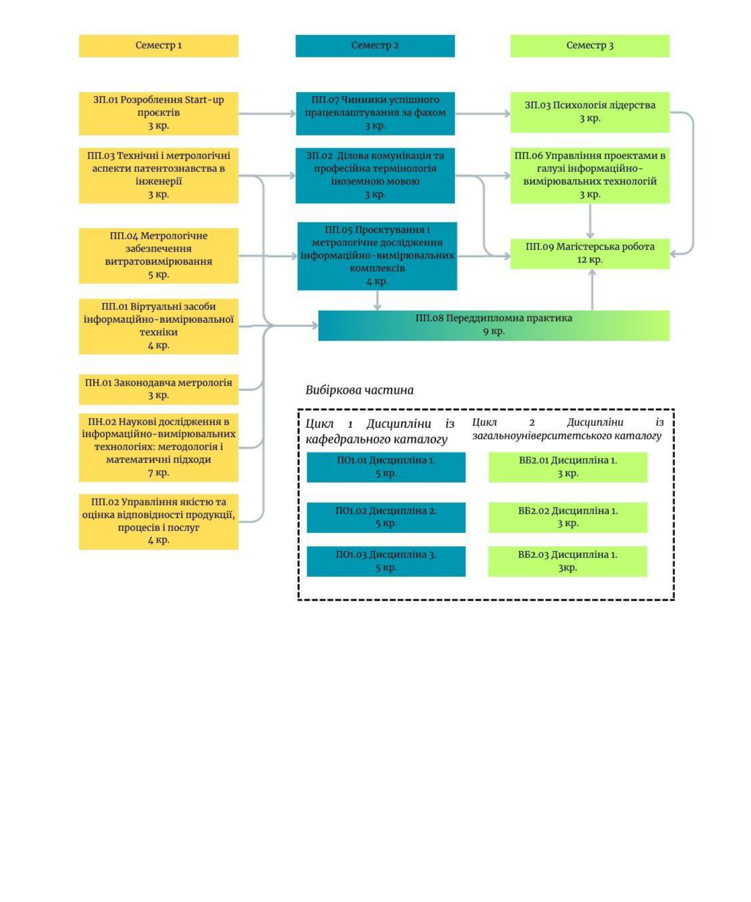

Структурно-логічна схема освітньо-професійної програми
Логічна послідовність вивчення дисциплін протягом трьох семестрів

Рівень вищої освіти: другий (магістерський)
Галузь знань: G Інженерія, виробництво та будівництво
Спеціальність: G6 Інформаційно-вимірювальні технології
Група: МТТ-М-2025 | Виконав: Твардовський Іван
Логічна послідовність вивчення дисциплін протягом трьох семестрів
